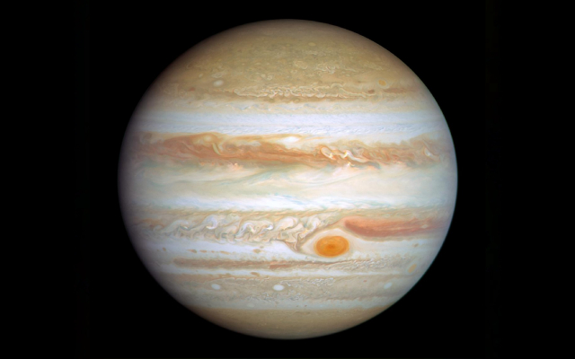

Jupiter
Jupiter is the fifth planet from the Sun, and also the largest in the Solar System
Information

| Property | Value |
|---|---|
| Mass (1024 kg) | 1,898.13 |
| Volume (1010 km3) | 143,128 |
| Mean Density (kg/m3) | 1,326 |
| Surface Area | 61.42 billion km2 |
| Average Temperature | ~163 K (-110 C) |
| Wind Speeds | Up to 150 m/s (<30 degrees latitude); Up to 40 m/s (>30 degrees latitude) |
About Jupiter
Jupiter is the fifth planet from the Sun, and also the largest in the Solar System. It is a gas giant, and its total mass is more than 2.5x that of all the other planets in the Solar System combined. As of 2025, Jupiter has 95 recognised natural satellites, with the largest four of them labeled "Galilean" due to their subsequent discoveries by Galileo Galilei in 1610. Jupiter itself has been observed since prehistoric times.